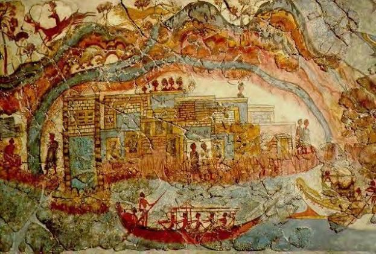
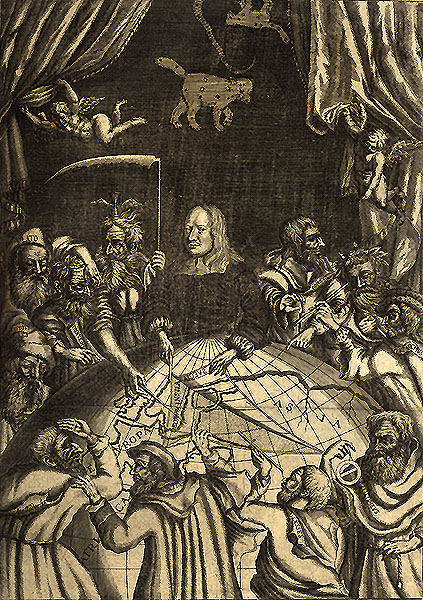

Con sorprendentes similitudes entre la representación de un ritual real atlante. Toros "sin armas, pero con cañas y trampas para cazar" y la representación de las corridas de toros minoicas , John V. Luce considera probable que una tradición egipcia sobre la entrada de Minoer en la imagen de Atlantis de Platón encontrada. Asume que Platón, incluso en Egipto, ha tomado nota de esta tradición. Aparte del hecho de que el viaje de Platón a Egipto es controvertido, no pudo leer ningún jeroglífico egipcio. Hubiera dependido de un traductor egipcio. Si realmente estuviera en Egipto, aún no estaría claro si se le tradujo la supuesta tradición y cómo lo adoptó Platón.
|

Frescos de caravanas o flotillas de barcos de una casa occidental encontrados en los restos de Akrotiri |

Ilustración de Rudbeck donde revela a sus "predecesores" Hesíodo , Platón , Aristóteles , Apolodor , Tácito , Odiseo , Ptolomeo , Plutarco y Orfeo la "verdad" sobre la Atlántida |
|---|
Poseidón asentó las leyes de la Atlántida según las cuales todos los gobernantes eran iguales. El cuerpo del gobierno se reunía regularmente. Consistía en diez gobernantes que estaban representados por los primeros gobernantes, Atlas y sus nueve hermanos, que reinaron con poder absoluto de la vida y la muerte sobre los demás asuntos. Ellos se reunían en el tempolo de Poseidón donde los primeros gobernantes inscribieron las leyes en un pilar del oráculo. Primero, tal y como era requerido por la antigua ceremonia, se intercambiaban compromisos. Luego un se capturaba y mataba un toro sagrado. El cuerpo se quemaba en un sacrificio al dios. La sangre se mezclaba con vino y se vertía sobre el fuego como un acto de purificación para cada hombre. A los gobernantes se les servía vino en copas doradas, cada uno vertía un poco sobre el fuego y hacía el juramento de juzgar según las leyes inscritas. Cuando terminaban su voto bebían de su vino y dedicaban su copa al templo. Esto continuaba con una cena, en la cual los gobernantes estaban vestidos con magníficas túnicas azules, en la que juzgaban asuntos concernientes al reino de acuerdo con las leyes de Poseidón.
Mientras tanto ellos juzgaban y vivían según las leyes de Poseidón y el reino prosperaba. Los problemas empezaron cuando se empezaron a olvidar las leyes. Muchos de los gobernantes se casaban con mortales y hacían su vida como los estúpidos humanos. Pronto los gobernantes mostraron codicia por más poder. Luego Zeus vió lo que les estaba pasando a los gobernantes. Ellos habían abandonado las leyes de los dioses y actuaban como hombres en una malvada coalición. Él se reunió con todos los dioses del Olimpo y ellos pronunciaron el juicio sobre la Atlántida. Es justo aquí donde la historia de Platón se detiene.
 Ir Arriba
Ir Arriba